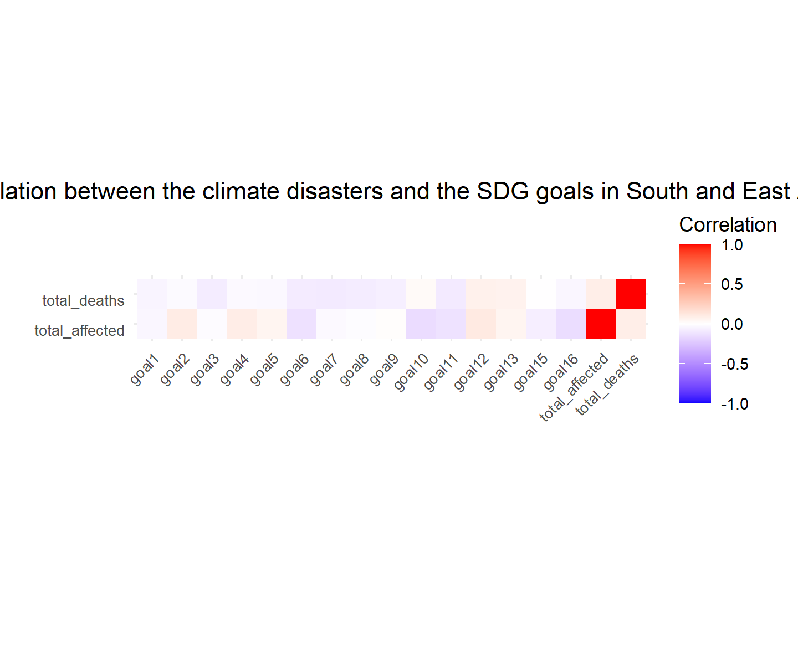
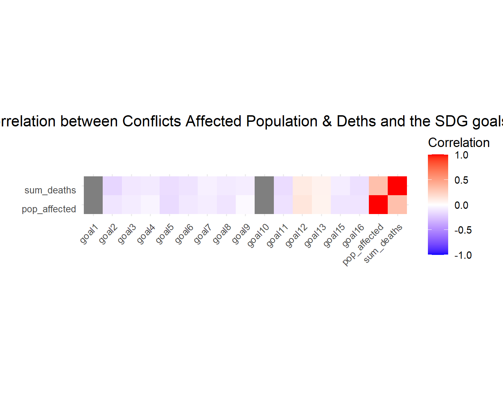
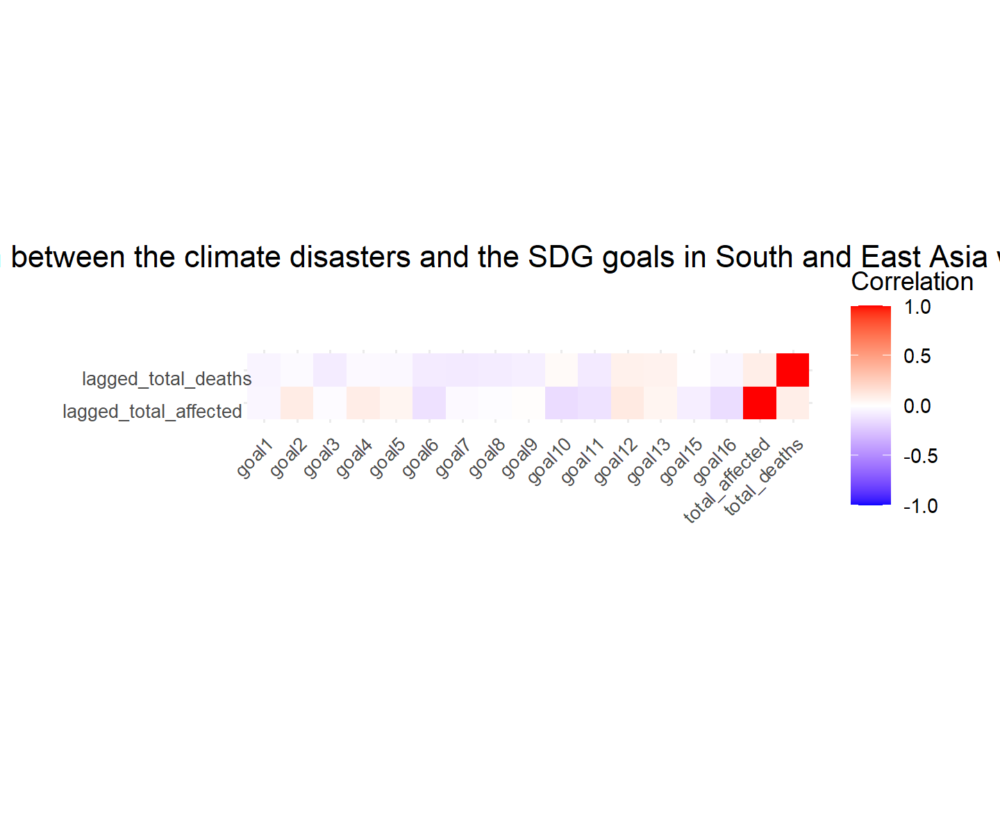

Focus on the correlation between the SDG scores and the different events.
Starting from what we saw with our correlation maps, we concluded that they did not have any big impact on the SDG scores per region.
Here you can see an extract of our correlation map between the climate disasters and the SDG goals in South and East Asia as it was the regions that where the most impacted.
library(ggplot2)south_east_asia_data <- Q3.1[Q3.1$region %in%c("South Asia", "East Asia"), ]relevant_columns <-c("goal1", "goal2", "goal3", "goal4", "goal5", "goal6", "goal7", "goal8", "goal9", "goal10", "goal11", "goal12", "goal13", "goal15", "goal16", "total_affected", "total_deaths")subset_data <- south_east_asia_data[, relevant_columns]correlation_matrix_subset <-cor(subset_data[, c("total_affected", "total_deaths")], subset_data)cor_melted <- reshape2::melt(correlation_matrix_subset)names(cor_melted) <-c("Variable2", "Variable1", "Correlation")ggplot(data = cor_melted, aes(Variable1, Variable2, fill = Correlation)) +geom_tile() +scale_fill_gradient2(low ="blue", high ="red", mid ="white",midpoint =0, limit =c(-1, 1), space ="Lab",name ="Correlation") +theme_minimal() +theme( axis.text.x =element_text(angle =45, size =8, hjust =1),axis.text.y =element_text(vjust =1, size =8, hjust =1),plot.title =element_text(margin =margin(b =20), hjust =0.5, vjust =8, lineheight =1.5) ) +coord_fixed() +labs(x ='', y ='',title ='Correlation between the climate disasters and the SDG goals in South and East Asia')

Here you can see an extract of our correlation map between the COVID-19 and the SDG goals.
Here you can see an extract of our correlation map between the conflicts and the SDG goals in Middle East & North Africa, Sub-Saharan Africa, South Asia, Latin America & the Caribbean, Eastern Europe, Caucasus and Central Asia as it was the regions that where the most impacted. We analysed this regions also for sum_deaths because it has the same touched regions than affected population.
conflicts_filtered <- Q3.3[Q3.3$region %in%c("Middle East & North Africa", "Sub-Saharan Africa", "South Asia", "Latin America & the Caribbean", "Eastern Europe", "Caucasus and Central Asia"), ]relevant_columns <-c("goal1", "goal2", "goal3", "goal4", "goal5", "goal6", "goal7", "goal8", "goal9", "goal10", "goal11", "goal12", "goal13", "goal15", "goal16", "pop_affected", "sum_deaths")subset_data <- conflicts_filtered[, relevant_columns]correlation_matrix_Conflicts_Pop_Aff <-cor(subset_data, subset_data[, c("pop_affected", "sum_deaths")])cor_melted <-as.data.frame(as.table(correlation_matrix_Conflicts_Pop_Aff))names(cor_melted) <-c("Variable1", "Variable2", "Correlation")ggplot(data = cor_melted, aes(Variable1, Variable2, fill = Correlation)) +geom_tile() +scale_fill_gradient2(low ="blue", high ="red", mid ="white",midpoint =0, limit =c(-1, 1), space ="Lab",name ="Correlation") +theme_minimal() +theme( axis.text.x =element_text(angle =45, size =8, hjust =1),axis.text.y =element_text(vjust =1, size =8, hjust =1),plot.title =element_text(margin =margin(b =20), hjust =0.5, vjust =8, lineheight =2) ) +coord_fixed() +labs(x ='', y ='',title ='Correlation between Conflicts Affected Population & Deths and the SDG goals')

After looking at almost the same results, we asked ourselves if the fact that we do not see any correlations is because the consequences of this disasters arrive later on, so we decided to remake the same correlations with 1 year gap.
Correlations for each event with one year gap
Here you can see for example our correlation map between the climate disasters and the SDG goals in South and East Asia with one year gap.
south_east_asia_data <- Q3.1[Q3.1$region %in%c("South Asia", "East Asia"), ]relevant_columns <-c("goal1", "goal2", "goal3", "goal4", "goal5", "goal6", "goal7", "goal8", "goal9", "goal10", "goal11", "goal12", "goal13", "goal15", "goal16", "total_affected", "total_deaths")subset_data <- south_east_asia_data[, relevant_columns]lagged_subset_data <- subset_data %>%mutate(lagged_total_affected =lag(total_affected, default =NA),lagged_total_deaths =lag(total_deaths, default =NA) )correlation_matrix_lagged <-cor(lagged_subset_data[, c("lagged_total_affected", "lagged_total_deaths")], subset_data)cor_melted_lagged <- reshape2::melt(correlation_matrix_lagged)names(cor_melted_lagged) <-c("Variable2", "Variable1", "Correlation")ggplot(data = cor_melted_lagged, aes(Variable1, Variable2, fill = Correlation)) +geom_tile() +scale_fill_gradient2(low ="blue", high ="red", mid ="white",midpoint =0, limit =c(-1, 1), space ="Lab",name ="Correlation") +theme_minimal() +theme( axis.text.x =element_text(angle =45, size =8, hjust =1),axis.text.y =element_text(vjust =1, size =8, hjust =2),plot.title =element_text(margin =margin(b =20), hjust =0.5, vjust =6, lineheight =1.5) ) +coord_fixed() +labs(x ='', y ='',title ='Correlation between the climate disasters and the SDG goals in South and East Asia with 1 year gap')

Even with a year gap it doesn’t seem that climate disaster with such consequences as the population that gets affected and dies has an impact on the SDG scores as we would have though. But we are still a little bit optimistic and though why not look at the correlations with a gap year over the years.
Interactive map of the correlation between the different events and the SDG goals with 1 year gap.
Here you can see an interactive map of the correlation between the climate disasters and the SDG goals in South and East Asia with 1 year gap. To better understand the results, if we select a specific year (e.g., 2020) in the app, the analysis will show correlations between the SDG scores for the selected year (e.g., 2020) and the disaster-related variables (total_affected and total_deaths) from the previous year (e.g., 2019). results -> nothing?
library(shiny)library(plotly)south_east_asia_data <- Q3.1[Q3.1$region %in%c("South Asia", "East Asia"), ]relevant_columns <-c("goal1", "goal2", "goal3", "goal4", "goal5", "goal6", "goal7", "goal8", "goal9", "goal10", "goal11", "goal12", "goal13", "goal15", "goal16", "total_affected", "total_deaths")subset_data <- south_east_asia_data[, relevant_columns]lagged_subset_data <- subset_data %>%mutate(lagged_total_affected =lag(total_affected, default =NA),lagged_total_deaths =lag(total_deaths, default =NA) )correlation_matrix_lagged <-cor(lagged_subset_data[, c("lagged_total_affected", "lagged_total_deaths")], subset_data)cor_melted_lagged <- reshape2::melt(correlation_matrix_lagged)names(cor_melted_lagged) <-c("Variable2", "Variable1", "Correlation")ui <-fluidPage(titlePanel("Interactive Correlation Heatmap between the climate disasters and the SDG goals in South and East Asia with 1 year gap"),plotlyOutput("heatmap"),sliderInput("year", "Select Year", min =2000, max =2021, value =2012, step =1))server <-function(input, output) { selected_data <-reactive({ filtered_data <- south_east_asia_data[south_east_asia_data$year == input$year, ] subset_data <- filtered_data[, relevant_columns] lagged_subset_data <- subset_data %>%mutate(lagged_total_affected =lag(total_affected, default =NA),lagged_total_deaths =lag(total_deaths, default =NA) ) correlation_matrix_lagged <-cor(lagged_subset_data[, c("lagged_total_affected", "lagged_total_deaths")], subset_data) cor_melted_lagged <- reshape2::melt(correlation_matrix_lagged)names(cor_melted_lagged) <-c("Variable2", "Variable1", "Correlation")return(cor_melted_lagged) }) output$heatmap <-renderPlotly({ p <-plot_ly(data =selected_data(), x =~Variable1, y =~Variable2, z =~Correlation, type ="heatmap", colorscale =list(c(-1, "blue"), c(0, "white"), c(1, "red")),zmin =-1, zmax =1) p <- p %>%layout(title ="",xaxis =list(title =""),yaxis =list(title =""),coloraxis =list(colorbar =list(title ="Correlation", tickvals =c(-1, 0, 1), ticktext =c("-1", "0", "1"),len =5,thickness =20,x =0,xanchor ="left",ticks ="outside" ) ) )return(p) })}shinyApp(ui = ui, server = server)
Shiny applications not supported in static R Markdown documents
here you can see an interactive map of the correlation between COVID-19 and the SDG goals with 1 year gap. And strangely, instead of having a negative correlation, we expected that the more cases and deaths happened because of CPVOD-19, the scores of the SDG would be negatively affected,but with the gap year we can see that the scores of the Goal3, Goal6, Goal9 and Goal16 are quite positively impacted by the COVID-19.
library(shiny)library(plotly)Q3.2<-read.csv(here("scripts", "data", "data_question3_2.csv"))covid_filtered <- Q3.2relevant_columns <-c("goal1", "goal2", "goal3", "goal4", "goal5", "goal6", "goal7", "goal8", "goal9", "goal10", "goal11", "goal12", "goal13", "goal15", "goal16", "stringency", "cases_per_million", "deaths_per_million")subset_data <- covid_filtered[, relevant_columns]correlation_matrix_Covid <-cor(subset_data, subset_data[, c("stringency", "cases_per_million", "deaths_per_million")])cor_melted <-as.data.frame(as.table(correlation_matrix_Covid))names(cor_melted) <-c("Variable1", "Variable2", "Correlation")ui <-fluidPage(titlePanel("Interactive Correlation Heatmap between COVID and the SDG goal with one year gap"),plotlyOutput("heatmap"),sliderInput("year", "Select Year", min =2020, max =2022, value =2020, step =1))server <-function(input, output) { selected_covid_data <-reactive({ filtered_data <- covid_filtered[covid_filtered$year == input$year, ] subset_data <- filtered_data[, relevant_columns]return(subset_data) }) output$heatmap <-renderPlotly({ correlation_matrix_Covid <-cor(selected_covid_data(), selected_covid_data()[, c("stringency", "cases_per_million", "deaths_per_million")]) cor_melted <-as.data.frame(as.table(correlation_matrix_Covid))names(cor_melted) <-c("Variable1", "Variable2", "Correlation") p <-plot_ly(data = cor_melted, x =~Variable1, y =~Variable2, z =~Correlation,type ="heatmap", colorscale =list(c(0, "blue"), c(0.5, "white"), c(1, "red")),zmin =-1, zmax =1) p <- p %>%layout(title ="",xaxis =list(title =""),yaxis =list(title =""),coloraxis =list(colorbar =list(title ="Correlation",tickvals =c(-1, 0, 1), ticktext =c("-1", "0", "1"),len =5, thickness =20, x =0,xanchor ="left", ticks ="outside" ) ) )return(p) })}shinyApp(ui = ui, server = server)
Shiny applications not supported in static R Markdown documents
Finally, here you can see an interactive map of the correlation between Conflict and the SDG goals with 1 year gap. Nothing?
library(shiny)library(plotly)conflicts_filtered <- Q3.3[Q3.3$region %in%c("Middle East & North Africa", "Sub-Saharan Africa", "South Asia", "Latin America & the Caribbean", "Eastern Europe", "Caucasus and Central Asia"), ]relevant_columns <-c("goal1", "goal2", "goal3", "goal4", "goal5", "goal6", "goal7", "goal8", "goal9", "goal10", "goal11", "goal12", "goal13", "goal15", "goal16", "pop_affected", "sum_deaths")subset_data <- conflicts_filtered[, relevant_columns]correlation_matrix_Conflicts_Pop_Aff <-cor(subset_data, subset_data[, c("pop_affected", "sum_deaths")])cor_melted <-as.data.frame(as.table(correlation_matrix_Conflicts_Pop_Aff))names(cor_melted) <-c("Variable1", "Variable2", "Correlation")ui <-fluidPage(titlePanel("Interactive Correlation Heatmap between Conflicts in selected regions and the SDG goal with one year gap"),plotlyOutput("heatmap"),sliderInput("year", "Select Year", min =2000, max =2016, value =2005, step =1))server <-function(input, output) { selected_conflicts_data <-reactive({ filtered_data <- conflicts_filtered[conflicts_filtered$year == input$year, ] subset_data <- filtered_data[, relevant_columns]return(subset_data) }) output$heatmap <-renderPlotly({ correlation_matrix_Conflicts_Pop_Aff <-cor(selected_conflicts_data(), selected_conflicts_data()[, c("pop_affected", "sum_deaths")]) cor_melted <-as.data.frame(as.table(correlation_matrix_Conflicts_Pop_Aff))names(cor_melted) <-c("Variable1", "Variable2", "Correlation") p <-plot_ly(data = cor_melted, x =~Variable1, y =~Variable2, z =~Correlation,type ="heatmap", colorscale =list(c(-1, "blue"), c(0, "white"), c(1, "red")),zmin =-1, zmax =1) p <- p %>%layout(title ="",xaxis =list(title =""),yaxis =list(title =""),coloraxis =list(colorbar =list(title ="Correlation",tickvals =c(-1, 0, 1), ticktext =c("-1", "0", "1"), len =5, thickness =20, x =0, xanchor ="left", ticks ="outside" ) ) )return(p) })}shinyApp(ui = ui, server = server)
Shiny applications not supported in static R Markdown documents
Our last idea is to see the regressions between the SDG scores and the variables of each event that we thought interesting.
Regressions between the SDG scores and the events variables.
Let’s see the regressions for each score depending of each variable in the disasters dataset (total_affected and total_deaths)